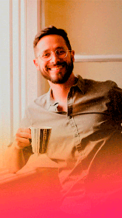

Nuestro fundador
Luis Asuaje
Profesor Luis: Filósofo, trovador, amante del mpb (música popular brasilera) pero es escritor, brasilero por error. ganó un premio de literatura, amante de los libros, la música y el café.
Soy Macu, además de profe de español, soy bordadora y madre de un perrito. Siempre me van a encontrar con el mate al lado.

Tengo veintitrés años, estudié derecho pero despues tomé la decisión de seguir mi sueño y estudiar medicina en Buenos Aires . Soy auxiliar el CCL
Tengo veintitrés años, estudié derecho pero despues tomé la decisión de seguir mi sueño y estudiar medicina en Buenos Aires . Soy auxiliar el CCL

Soy profesora de Italiano. Nací en Brasil pero vivo en Italia desde mis 7 años de edad. Actualmente soy estudiante de Medicina en la Fundación Barceló

Soy Hondureña, vivo en Buenos Aires, Estudie diseño grafico en la Universidad de Buenos Aires, soy ilustradora y ahora trabajo en CCL como diseñadora grafica

Me llamo Caroline, vivo en la ciudad de Buenos Aires pero soy Brasileña. Estudio Medicina en la Universidad, pero trabajo como profesora de inglés. ! Soy profesora de español

Amo la literatura y la música. Me apasiona aprender sobre nuevas culturas . En mi tiempo libre me encontrás tomando mate y ¡leyendo un buen libro! Soy profesora de español

Soy venezolana y vivo en Argentina desde hace 10 años en donde trabajo como líder de proyectos con impacto social. Me encantan los gatos lasplantas y el ciclismo